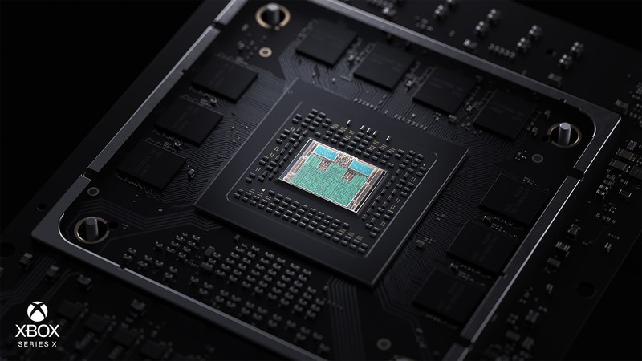
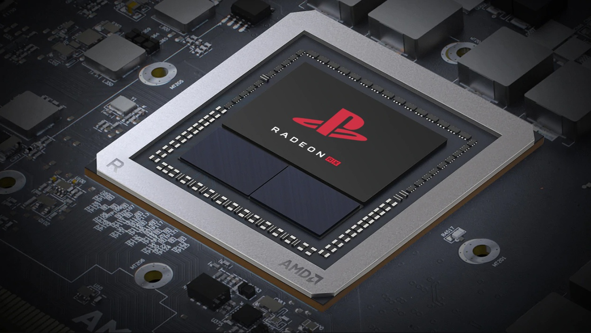
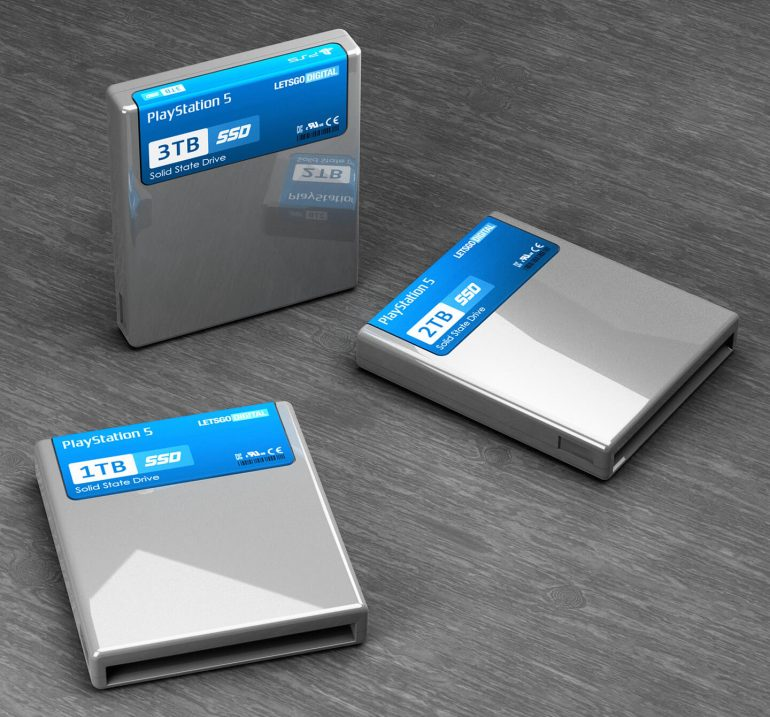
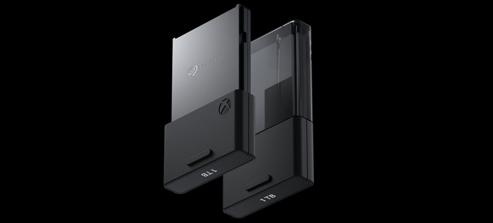

PlayStation 5 vs Xbox Series X
PS5 vs Xbox Series X: o que aprendemos sobre as principais diferenças?
Com a mesma janela de lançamento para o PS5 e Xbox Series X, qual será a vantagem?

Há muita informação para digerir quando se trata da competição PS5 x Xbox Series X. E, com os dois consoles de próxima geração lançados no final deste ano, haverá muito mais a caminho nos próximos meses - mas também há muita coisa sendo descartada agora. A Sony nos deu uma boa olhada nas especificações do PS5 (embora infelizmente não seja o design do console ) em uma transmissão ao vivo realizada pelo arquiteto do sistema PS5 Mark Cerny em 18 de março - que tinha muito a dizer sobre a unidade SSD do console e a compatibilidade com versões anteriores , mesmo que parece que o console da Sony não terá todo o poder do console Xbox de última geração . A Microsoft foi muito franca com as informações do Xbox Series X , revelando o próximo design, nome e alguns jogos futuros do Xbox. Também descobrimos vários recursos , como o Smart Delivery , que permitirá que você jogue a " melhor versão possível " de um jogo que você comprou no Xbox One , sem precisar comprá-lo novamente. Apesar de quaisquer diferenças nos recursos internos, é provável que as datas de lançamento sejam ao mesmo tempo - na mesma semana, ou seja -, portanto, eles estarão diretamente frente a frente, provavelmente dividindo os jogadores mais uma vez no campo de Xbox 'ou' PlayStation '. Os próximos lançamentos de console representam grandes apostas para os dois fabricantes, com a liderança da Sony na atual guerra de consoles à medida que novos hardwares de alta potência chegam ao mercado. Mas o Xbox Series X pode assumir a coroa, e o que os novos consoles realmente farão de maneira diferente dos antigos Xbox One e PS4 ? Reunimos este guia do Xbox Series X vs PS5 para colocar os dois consoles de última geração sob o microscópio e avaliar se sabemos o que sabemos sobre preço (definitivamente caro), data de lançamento (final de 2020) e recursos de hardware (lotes) pode nos falar sobre o futuro dos jogos de console.
Xbox Series X vs PS5: principais fatos

O que eles são? O Xbox Series X e o PlayStation 5 são os próximos consoles de jogos da Microsoft e da Sony, criados para oferecer experiências de jogo mais ambiciosas e graficamente impressionantes do que nunca. Data de lançamento do Xbox Series X e PS5: Sony e Microsoft confirmaram as datas de lançamento do "Holiday 2020", ou seja, de outubro a dezembro. O que posso jogar nele? Até agora, não tivemos muitos jogos confirmados. No entanto, os dois consoles terão elementos de compatibilidade com versões anteriores, e esperamos que jogos como o Cyberpunk 2077 apareçam nas duas máquinas. O PS5 é mais poderoso que o Xbox Series X? Seus recursos de processamento parecem bastante similares até agora, mas a Microsoft parece ter uma pequena vantagem. Quanto custará o PS5 e o Xbox Series X? Poderíamos estar procurando etiquetas de preço de US $ 500 / £ 500 / AU $ 500, mas não há nenhuma palavra oficial até o momento. O poder superior do Xbox também pode sugerir um pequeno prêmio.
Xbox Series X vs PS5: especificações até agora
 Memória
Embora tenha sido a Sony a dar o primeiro passo, dando os primeiros detalhes concretos sobre seu PS5 em abril de 2019, a vitrine E3 2019 da Microsoft mostrou que ambas as empresas parecem estar cantando da mesma folha de hinos com as especificações internas de suas novas máquinas. O PlayStation 5 terá uma versão personalizada do chipset AMD Ryzen de terceira geração, com 8 núcleos com a nova arquitetura Zen 2 da empresa e gráficos Navi . A CPU será executada em 3,5 GHz. A GPU oferece 36 unidades de computação rodando a 2,23 GHz e oferecendo 10,28TFLOPs. Essas partes são combinadas com 16 GB de GDDR6 e uma largura de banda de 448 GB / s. É um sistema que será capaz de suportar o traçado de raios - uma técnica de iluminação com alto desempenho que anteriormente era a reserva de GPUs de PC caras e sofisticadas, e que agora sabemos que serão " incorporadas ao hardware da GPU " para o PS5.
 Talvez o elemento mais interessante da construção da Sony seja o seu compromisso de usar o armazenamento SSD . A unidade de estado sólido do PlayStation 5 será novamente um hardware personalizado, oferecendo 825 GB de armazenamento com uma taxa de transferência bruta de 5,5 GB / s (e até 9 GB / s de dados compactados). A Sony já demonstrou suas proezas técnicas com uma demonstração do jogo PS4 do Spider-Man existente. No hardware PS5, o jogo é capaz de percorrer uma cidade de Nova York incrivelmente detalhada em velocidades incrivelmente altas sem nenhum atraso no carregamento da geometria ou no fluxo de textura, algo que nunca seria possível no PS4.
Gráficos
A Sony também falou sobre o console estabelecer um novo "padrão ouro" em áudio 3D imersivo, principalmente para aqueles que usam fones de ouvido enquanto jogam. (Algumas patentes vazadas também exibem um design de ventilação intenso para lidar com todo esse poder de processamento.) Aprendemos que a Sony está fornecendo esse áudio através do Tempest Engine, que pode lidar com centenas de fontes de som, para um ambiente de áudio mais realista . O PS5 também suporta resoluções de tela de até 8K - muito mais altas do que o HD padrão de 1080p da maioria das televisões das pessoas, sem falar no 4K cada vez mais popular. Também funciona com taxas de atualização de 120Hz, permitindo movimentos suaves nos jogos. Essas são especificações incrivelmente intensivas em desempenho, por isso não esperamos que um jogo atinja esses padrões regularmente (sem mencionar a necessidade de uma TV cara que os suporte), mas é bom ver o que a Sony está buscando.

Comparativo